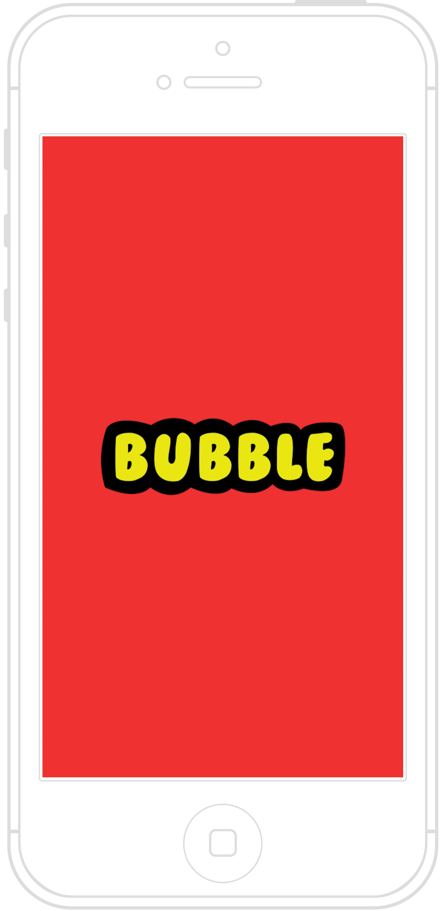
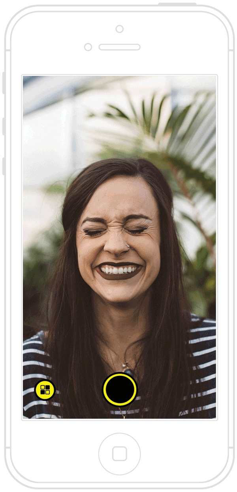
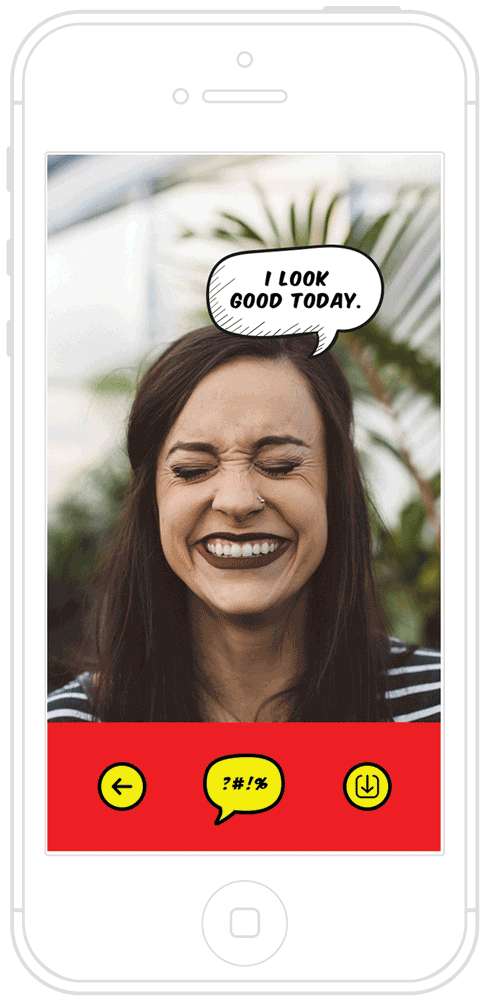
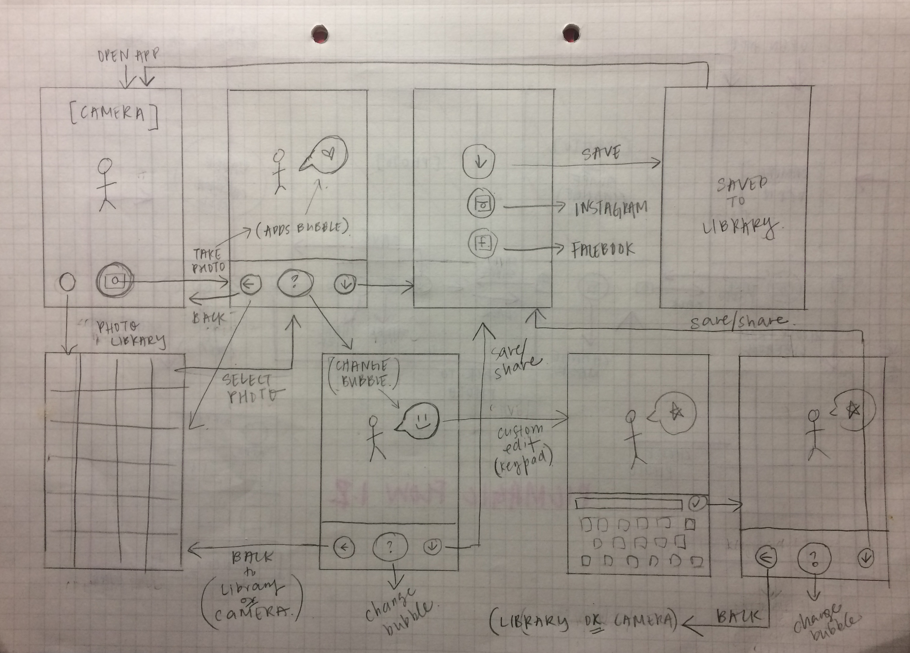

Bubble

A mobile app that adds speech bubbles to photos according to people's emotions
Hackday Project for Cardinal Blue
Using technology to enrich visual stories Taking inspiration from meme generation, we wanted to make it easier for people to instantly create funny and attractive captions for their photos.Challenge
Instead of just creating a tool that allows users to create content, we wanted to take it a step further and transform the experience so that the app automatically creates the content for the user. However, the captions still needed to be meaningful and personal to the user's photos.Solution
To automatically generate content that feels more personal for the user, Bubble detects people's emotions in a photo and places comic book style speech bubbles based on their emotions. A sad face gets a sad caption, and a happy face gets a happy caption. Users can also edit the captions themselves to create custom text.User Persona: Jessica
"I am an avid online content creator and love telling visual stories that people can connect with. "

Jessica is almost done at work and feels like taking a selfie for fun. She opens Bubble and snaps a picture, and has fun placing random speech bubbles on her selfie.

She decides to type her own and posts it to Instagram.
Learnings
Since this was a one day project, we did not have time to conduct user interviews or tests. While I believe the usefulness of the app could be limited as it is quite specific, the project was an interesting exploration of the applications of emotion detection technology. It reflects how processes can become more systematic and intelligent, eliminating manual actions. I am excited to further explore products that use the detection of human states to improve and personalize processes.Wireframe
Process
Define, ideate, user flow, wireframe, visual design
This was a Hackday project that was designed and presented in one day. My team included a product manager and two developers. We collaboratively came up with a general user flow. I was in charge of the wireframe and visual design. The developers created a rudimentary mobile app using the visual assets I created. Screens were prototyped using Sketch and Photoshop.